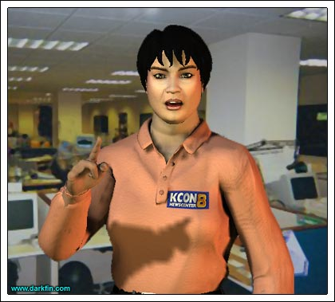
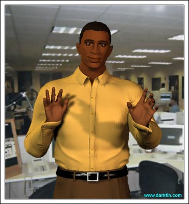

<html><head><style>
  .stage { background-color: #ddd; margin: 10px 30px; }
  .actor { background-color: #cee; }
  .line { background-color: #eec; }
  .actor:after { content: ":"; }
  </style>
  </head>
  <body>
  <h1>Year 2, Chapter 6</h1><h2>&quot;Contact&quot;</h2>


<div class="stage">Sitting in her KCON office cube, Morrigan McBride pecks at the keyboard, working on her afternoon story, as she waits on hold with the California Highway Patrol. Ten minutes later, a human voice finally answers.</div>
<p class="line"><span class="actor">Morrigan</span> (Exasperated) Look, I have pushed over a dozen numbers and have listened to three complete rock ballads, I just want to find out where my gun is - no, I've already tried that... yes, it was over four months ago when I first came to town, the officer seized it because of an incident I had with my car - Officer Baten... what do you mean there's no Officer Baten? - YES, I'M SURE THAT'S HIS NAME - but... wait, NO - listen, I'll come down there in person to straighten this out - I NEED AN APPOINTMENT? - well, please make one for me... call back at 1:00 pm? - DO YOU KNOW WHO MY FATHER IS? - hello?</p>
 
<div class="stage">Morrigan slams down her phone and groans.</div>
<p class="line"><span class="actor">Morrigan</span> NO ONE DOES THEIR DAMN JOB ANYMORE - UGH... I can't believe I used that line about my dad</p>
 
<div class="stage">As she sighs and collects herself, an instant message pops up on the screen from Zachary Isaacson.</div>
<blockquote>
 <p class="line"><span class="actor"><color="#800000">IZ4U</color></span> m&amp;m + me = lunch NOW</p>
 <p class="line"><span class="actor"><color="#4b0082">MMcB</color></span> later - i have another mystery w/ law enforcement</p>
 <p class="line"><span class="actor"><color="#800000">IZ4U</color></span> shocking</p>
 <p class="line"><span class="actor"><color="#4b0082">MMcB</color></span> my gun is missing</p>
 <p class="line"><span class="actor"><color="#800000">IZ4U</color></span> gun???</p>
 <p class="line"><span class="actor"><color="#4b0082">MMcB</color></span> i kept it in my car - taken the day i arrived in DB</p>
 <p class="line"><span class="actor"><color="#800000">IZ4U</color></span> proper paperwork???</p>
 <p class="line"><span class="actor"><color="#4b0082">MMcB</color></span> YES - dad made sure of it</p>
 <p class="line"><span class="actor"><color="#800000">IZ4U</color></span> i'll ask my fuzzy sources</p>
 <p class="line"><span class="actor"><color="#4b0082">MMcB</color></span> THANX : )</p>
 <p class="line"><span class="actor"><color="#800000">IZ4U</color></span> tacos@2</p>
 <p class="line"><span class="actor"><color="#4b0082">MMcB</color></span> si</p>
 <p class="line"><span class="actor"><color="#800000">IZ4U</color></span> bring fingers with</p>
 <p class="line"><span class="actor"><color="#4b0082">MMcB</color></span> hasta!!!</p>
 </blockquote>
 
<div class="stage">As Morrigan returns to her story, another instant message pops up.</div>
<blockquote>
 <p class="line"><span class="actor"><color="#003300">Anon1</color></span> Fish &amp; CHiPs</p>
 <p class="line"><span class="actor"><color="#4b0082">MMcB</color></span> u said tacos zach</p>
 <p class="line"><span class="actor"><color="#003300">Anon1</color></span> This is not Zach</p>
 <p class="line"><span class="actor"><color="#4b0082">MMcB</color></span> don't be a dick - what's with the Anon1 bit?</p>
 <p class="line"><span class="actor"><color="#003300">Anon1</color></span> Missing something?</p>
 <p class="line"><span class="actor"><color="#4b0082">MMcB</color></span> (Finally catching the clue) do u know something about my missing something???</p>
 <p class="line"><span class="actor"><color="#003300">Anon1</color></span> Try the caves</p>
 <p class="line"><span class="actor"><color="#4b0082">MMcB</color></span> only if u try them with me</p>
 <p class="line"><span class="actor"><color="#003300">Anon1</color></span> I already have</p>
 <p class="line"><span class="actor"><color="#4b0082">MMcB</color></span> is this the hooded latin-chanting coward or the annoying green sand crab eater?</p>
 <p class="line"><span class="actor"><color="#003300">Anon1</color></span> Would you rather have me eat you?</p>
 <p class="line"><span class="actor"><color="#4b0082">MMcB</color></span> ZACH - this better not b u</p>
 <p class="line"><span class="actor"><color="#003300">Anon1</color></span> Time for a swimming lesson</p>
 <p class="line"><span class="actor"><color="#4b0082">MMcB</color></span> when &amp; where???</p>
 <p class="line"><span class="actor"><color="#003300">Anon1</color></span> I will let you know</p>
 <p class="line"><span class="actor"><color="#4b0082">MMcB</color></span> i'll let you know IF i'm available</p>
 </blockquote>
 
<div class="stage">Saving the message and jumping up from her desk, Morrigan rushes over to Gracie Takanachi's cube. Fingers is hard at work on new images for her Sigma 7 website.</div>
<p class="line"><span class="actor">Morrigan</span> GRACIE</p>
 <p class="line"><span class="actor">Gracie</span> Hold on, one sec...</p>
 <p class="line"><span class="actor">Morrigan</span> IT CAN'T WAIT</p>
 <p class="line"><span class="actor">Gracie</span> It can and will for 30 seconds</p>
 
 <p class="line"><span class="actor">Morrigan</span> (Looking at her screen) DAMMIT, I NEED YOUR HELP 
 - STOP FUCKING AROUND WITH THAT ASININE WEBSITE</p>
 <p class="line"><span class="actor">Gracie</span> (Standing up and looking Morrigan in the eye) WHAT IN THE HELL IS YOUR PROBLEM?</p>
 <p class="line"><span class="actor">Morrigan</span> Can you do a trace on an IM?</p>
 <p class="line"><span class="actor">Gracie</span> It's not simple but it can be done</p>
 <p class="line"><span class="actor">Morrigan</span> Quick, go to my computer and get it!</p>
 
<div class="stage">Gracie scowls at her.</div>
<p class="line"><span class="actor">Morrigan</span> PLEASE?</p>
 <p class="line"><span class="actor">Gracie</span> Did you save it?</p>
 <p class="line"><span class="actor">Morrigan</span> Yes</p>
 <p class="line"><span class="actor">Gracie</span> (Returning to her site) Good, then it will be there when I'm ready to do something with it</p>
 <p class="line"><span class="actor">Morrigan</span> (Clenching her teeth and fists) COULD YOU... could you possibly explain to me what is so important about this site? - you go through all of this hard work, you never get any feedback, you certainly aren't making any money off it, these people are nothing but losers with no lives, the actual Sig7 show could care less if you live or die - don't you think your time and efforts could be better spent ELSEWHERE?</p>
 <p class="line"><span class="actor">Gracie</span> ELSEWHERE DOING YOUR SLAVE WORK, WHITE PERKY BITCH?</p>

<p></p>

<p class="line"><span class="actor">Morrigan</span> HELLO, THIS IS A PLACE OF BUSINESS, NOT R'XAL'S SPACE STATION</p>
 
<div class="stage">The two tone it down as several of their co-workers pop their heads over the cube.</div>
<p class="line"><span class="actor">Morrigan</span> (Waving to them) Hi there, everything's cool!</p>
 <p class="line"><span class="actor">Gracie</span> You know, Morri, I bet you were popular in school and had plenty of friends</p>
 <p class="line"><span class="actor">Morrigan</span> Not as many as you assume I did</p>
 <p class="line"><span class="actor">Gracie</span> Well, the only time kids wanted to play with me was to make fun of me or when my parents forced my brother to take me with him to play Star Wars or baseball with the neighborhood boys</p>
 <p class="line"><span class="actor">Morrigan</span> What does this have to do with anything?</p>
 <p class="line"><span class="actor">Gracie</span> Hold on, I'm getting there... I was the only one in my school with an outward disability and one of three Asians - an older Jap girl and a younger Chinaman - I spent my recesses with Jackie the one eyebrow girl and Kevin who constantly smelled like poo - and, at home, I was on the sofa with mom watching Ryan's Hope and Days of Our Lives</p>
 <p class="line"><span class="actor">Morrigan</span> I watched Dallas and Dynasty, so?</p>
 <p class="line"><span class="actor">Gracie</span> SO... IF YOU MAKE ONE MORE CRACK ABOUT MY QUIRKY WEBSITE FANDOM OBSESSION, I WILL BE FORCED TO MAKE JOKES ABOUT YOUR DEAD MOTHER AND NO ONE WANTS THAT</p>
 
<div class="stage">Both women look like they are ready to tear each other's eyes out as Jason Clark, the sportscaster, comes over to them.</div>
<p class="line"><span class="actor">Jason</span> LADIES... what's up?</p>
 <p class="line"><span class="actor">Morrigan</span> Jason</p>
 <p class="line"><span class="actor">Gracie</span> What do you want, Clark?</p>
 <p class="line"><span class="actor">Jason</span> A ring full of mud and a midget referee</p>

<p></p>


<div class="stage">Both women shoot puzzled looks to each other and then to him.</div>
<p class="line"><span class="actor">Jason</span> (Leaning on the wall of the cube) I'm just trying to lighten the mood a bit - they can hear you all the way down at our sister station in LA</p>
 <p class="line"><span class="actor">Morrigan</span> (Sheepish) Sorry about that</p>
 <p class="line"><span class="actor">Gracie</span> Screw LA</p>
 <p class="line"><span class="actor">Jason</span> So, what's the battle between you two about?</p>
 <p class="line"><span class="actor">Morrigan</span> Nothing important</p>
 <p class="line"><span class="actor">Gracie</span> Funny, it seemed real important a few moments ago - important enough to slam my Sig7 site!</p>
 <p class="line"><span class="actor">Jason</span> Ooh, not a smart move, McBride - Gracie's compulsion is no different than the millions of sports fans who spend every waking moment following their favorite players and keeping stats, spending tons of money on memorabilia and team jerseys... it's just not as mainstream</p>
 <p class="line"><span class="actor">Gracie</span> THANK THE GODS FOR THAT</p>
 
<div class="stage">Morrigan shakes her head and rolls her eyes. She suddenly notices several bruised knuckles on Jason's right hand.</div>
<p class="line"><span class="actor">Morrigan</span> What happened to your hand, Jason?</p>
 <p class="line"><span class="actor">Jason</span> (Holding it up) Oh, this? - just a little sports injury - I get carried away with a game of horse now and then</p>
 <p class="line"><span class="actor">Gracie</span> (Winking) He's a joke... I mean, a JOCK, always getting injured</p>
 <p class="line"><span class="actor">Jason</span> Hey, KCON has box seats to the Cactus game tonight, you two want to come along?</p>
 <p class="line"><span class="actor">Morrigan</span> I have plans tonight but definitely next time</p>
 <p class="line"><span class="actor">Jason</span> What about you, Grace?</p>
 <p class="line"><span class="actor">Gracie</span> I have a set to do later</p>
 <p class="line"><span class="actor">Jason</span> That's later, come on, it will be fun - I promise</p>
 <p class="line"><span class="actor">Gracie</span> (Sighing) I suppose</p>
 <p class="line"><span class="actor">Jason</span> (Big smile) COOL - we'll leave after my segment at six - oh, I almost forgot... I brought back a tiki glass for your collection from Vegas</p>
 <p class="line"><span class="actor">Gracie</span> Thanks, Clark - get back to work!</p>
 <p class="line"><span class="actor">Jason</span> (Striding away) No more catfights!</p>
 <p class="line"><span class="actor">Gracie</span> He's right, sorry about that</p>
 <p class="line"><span class="actor">Morrigan</span> Me too... I wonder what really happened to his hand?</p>
 <p class="line"><span class="actor">Gracie</span> Gimme a break, Morri</p>
 <p class="line"><span class="actor">Morrigan</span> That doesn't look like your typical sports injury</p>
 <p class="line"><span class="actor">Gracie</span> You're right, he secretly beat his wife with it... wait, he doesn't have a wife!</p>
 <p class="line"><span class="actor">Morrigan</span> Did you notice how quickly he changed the subject?</p>
 <p class="line"><span class="actor">Gracie</span> Would you stop being so suspicious for once?</p>
 <p class="line"><span class="actor">Morrigan</span> Easier said than done</p>
 <p class="line"><span class="actor">Gracie</span> (Getting up) No kidding, now show me this IM</p>
 
<div class="stage">The two return to Morrigan's cube and Gracie starts in on tracking the instant message.</div>
<p class="line"><span class="actor">Morrigan</span> He likes you, you know</p>
 <p class="line"><span class="actor">Gracie</span> Who?</p>
 <p class="line"><span class="actor">Morrigan</span> The man we were just speaking with... Jason</p>
 <p class="line"><span class="actor">Gracie</span> Please</p>
 <p class="line"><span class="actor">Morrigan</span> C'mon - he defended you AND brought you back a tiki glass - did you see his face light up when you said you'd go tonight?</p>
 <p class="line"><span class="actor">Gracie</span> You're crazy</p>
 <p class="line"><span class="actor">Morrigan</span> Maybe, but I'm also right</p>
 <p class="line"><span class="actor">Gracie</span> Look, unlike Kylee, I don't go out with KCON employees or black men</p>
 <p class="line"><span class="actor">Morrigan</span> How racist is that?</p>
 <p class="line"><span class="actor">Gracie</span> Look, I nearly killed my folks marrying a white man, I'm not about to finish the job with Home Boy</p>
 <p class="line"><span class="actor">Morrigan</span> That's stinkin' thinkin' Takanachi</p>
 <p class="line"><span class="actor">Gracie</span> Did your great grandma teach you that expression? - it needs to stay buried with her</p>
 <p class="line"><span class="actor">Morrigan</span> I'm just saying...</p>
 <p class="line"><span class="actor">Gracie</span> I know EXACTLY what you're saying - because I'm a &quot;minority&quot; I should have no problem dating other minorities</p>
 <p class="line"><span class="actor">Morrigan</span> Gracie...</p>
 <p class="line"><span class="actor">Gracie</span> I suppose you'll next try to fix me up with a guy in a wheelchair because that's all I'm worthy of</p>
 <p class="line"><span class="actor">Morrigan</span> STOP IT</p>
 <p class="line"><span class="actor">Gracie</span> Ah, here we go, your IM originated from Santa Conchita University but that is as far as I can go</p>
 <p class="line"><span class="actor">Morrigan</span> Interesting... thanks so much for your help</p>
 <p class="line"><span class="actor">Gracie</span> Are you going to tell me what this is about?</p>
 <p class="line"><span class="actor">Morrigan</span> Soon</p>
 <p class="line"><span class="actor">Gracie</span> Are you holding out Aleta Oscura info on me?</p>
 <p class="line"><span class="actor">Morrigan</span> (Steeling herself) Of course not</p>
 <p class="line"><span class="actor">Gracie</span> (Suspicious) Right - I need to get back to my Sig7 site and I'll leave you to your obsession with the Creature from the Black Lagoon</p>
 <p class="line"><span class="actor">Morrigan</span> Lunch?</p>
 <p class="line"><span class="actor">Gracie</span> (Walking away) No</p>
 
<div class="stage">Slumping in her seat, Morrigan calls Isaacson on her phone.</div>
<p class="line"><span class="actor">Morrigan</span> Zach, I think I pissed off Gracie</p>
 <p class="line"><span class="actor">Zach</span> You made fun of Sigma 7, didn't you?</p>
 <p class="line"><span class="actor">Morrigan</span> Kinda</p>
 <p class="line"><span class="actor">Zach</span> Oy</p>
 <p class="line"><span class="actor">Morrigan</span> How do I say I'm sorry?</p>
 <p class="line"><span class="actor">Zach</span> Pork rinds, yellow daisies and vinyl disco records</p>
 <p class="line"><span class="actor">Morrigan</span> (Rubbing her head) OK... ready for lunch?</p>
 <p class="line"><span class="actor">Zach</span> Can't, a better offer came up - see you tomorrow</p>
 <p class="line"><span class="actor">Morrigan</span> (Sighing as she clicks off) Heh, hanging with the hooded people is almost attractive right now</p>


<bar></bar>

<div>prev file = y2c05.html</div><div>next file = y2c07.html</div></body></html>